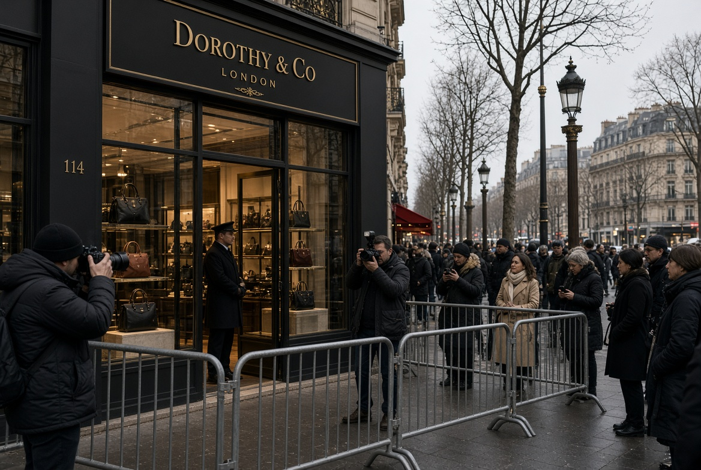

Lusso · La storia in copertinaLa contesa da 24,1 miliardi
Per una maison londinese che fattura meno di due miliardi, Balleroy e VCM stanno offrendo una somma da piccola nazione. Il prezzo è la parte meno interessante: la partita vera è tra due modi di possedere un nome.
Leggi l’articolo ↗